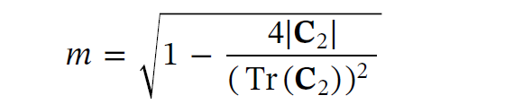
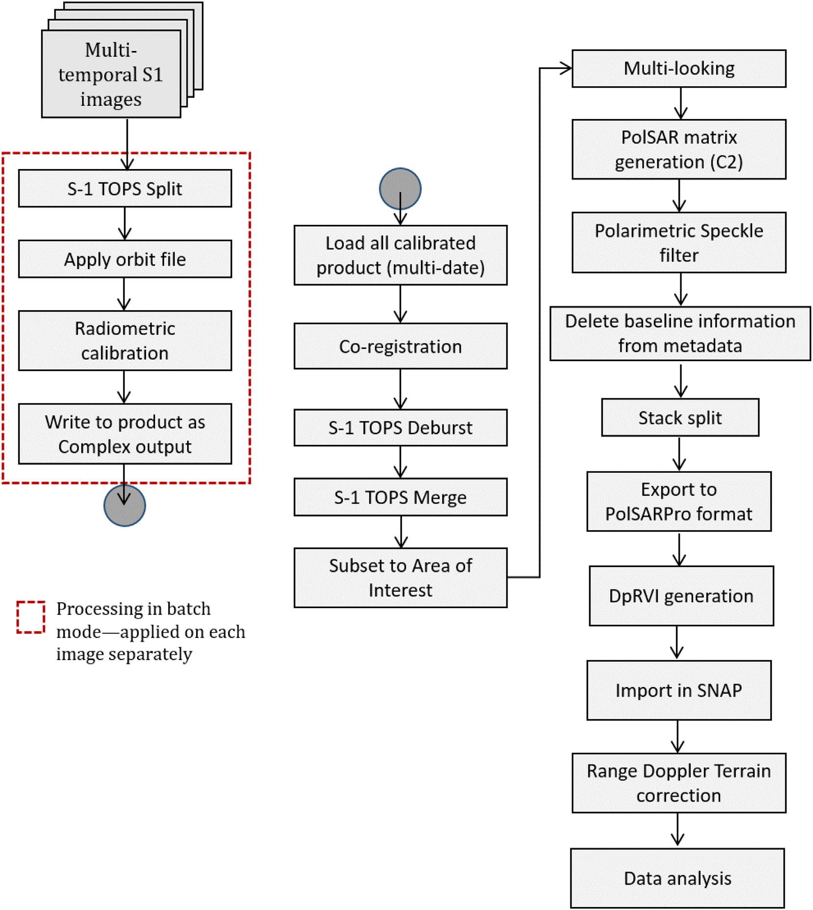
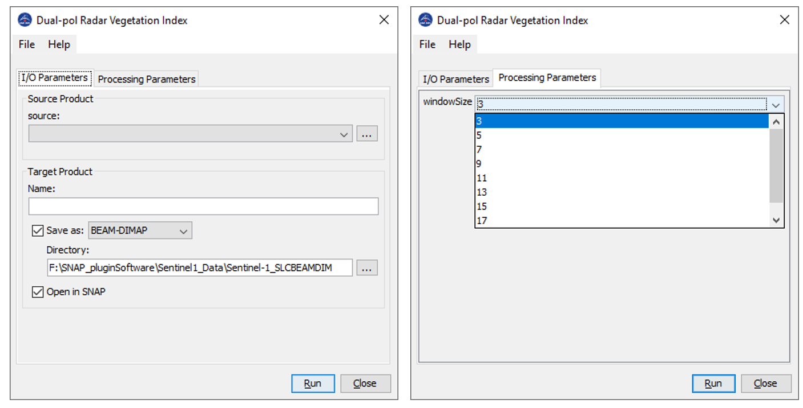

| Dual-pol Radar Vegetation Index Generation | |

Microwave Remote Sensing Lab (MRSLab) Indian Institute of Technology Bombay, India Contributors: Dr. Dipankar Mandal Tel: +91-22-2576-7677 Date: 25 Nov 2020 E-mail: mrscsre@gmail.com; dipankar.agrilengg@gmail.com URL: http://www.mrslab.in
The Dual-pol Radar Vegetation Index (DpRVI) is calculated from dual-pol 2x2 covariance matric C2.
The scattering information in terms of the degree of polarization and the eigenvalue spectrum are jointly utilized to derive the vegetation index from dual-pol SAR data. The state of polarization of an EM wave is characterized in terms of the degree of polarization (m) as proposed by Barakat (1977):

where Tr is the matrix trace operator (i.e., the sum of the diagonal elements) and |.| is the determinant of a matrix.
The two non-negative eigenvalues (lambda1>=lambda2>=0) are obtained from the eigen-decomposition of the C2 matrix which are then normalized with the total power Span (Tr(C2) = lambda1 + lambda2). The eigenvalues quantify the dominancy of scattering mechanisms. Hence, the parameter beta is introduces as beta = lambda1/Span
The dominant scattering information is modulated with the degree of polarization (m), which in particular characterizes anisotropy for dual-pol SAR data. The scattering randomness is then obtained by subtracting m x beta from unity, as given in the following equation by Mandal et al. (2020).
Ref: [1] Barakat, R., 1977. Degree of polarization and the principal idempotents of the coherency matrix. Opt. Commun. 23 (2), 147-150. [2] D. Mandal, V. Kumar, D. Ratha, S. Dey, A. Bhattacharya, J. M. Lopez-Sanchez, H. McNairn, Y. S. Rao, "Dual Polarimetric Radar Vegetation Index for Crop Growth Monitoring Using Sentinel-1 SAR Data," Remote Sensing of Environment, 247: 111954, 2020, DOI:10.1016/j.rse.2020.111954.
The general workflow to generate DpRVI from Sentinel-1 SLC products is highlighted in the following figure.

Sentinel-1 preprocessing workflow for time-series data to generate DpRVI.
The preprocessing workflow (Graph .xml file) can be found in https://github.com/mrslab-iitb/sentinel-1-SLC-preprocessing-polarimetry. ; Read more about Graph processing Sentinel-1 C2 matrix at: [Ref] : Mandal, D.; Vaka, D.S.; Bhogapurapu, N.R.; Vanama, V.S.K.; Kumar, V.; Rao, Y.S.; Bhattacharya, A. Sentinel-1 SLC Preprocessing Workflow for Polarimetric Applications: A Generic Practice for Generating Dual-pol Covariance Matrix Elements in SNAP S-1 Toolbox. Preprints 2019, 2019110393 (doi: 10.20944/preprints201911.0393.v1).
Inputs to DpRVI processor: C2 matrix of Sentinel-1 like dual-pol data.-->data type: float32 Processing window size--> data type int
Output of DpRVI processor: dprvi image-->data type: float32

For results analysis please follow the article "D. Mandal, V. Kumar, D. Ratha, S. Dey, A. Bhattacharya, J. M. Lopez-Sanchez, H. McNairn, Y. S. Rao, "Dual Polarimetric Radar Vegetation Index for Crop Growth Monitoring Using Sentinel-1 SAR Data," Remote Sensing of Environment, 247: 111954, 2020, DOI:10.1016/j.rse.2020.111954."